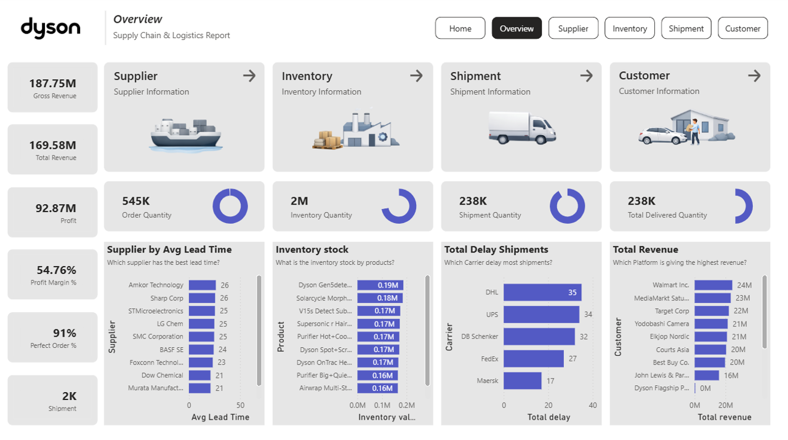
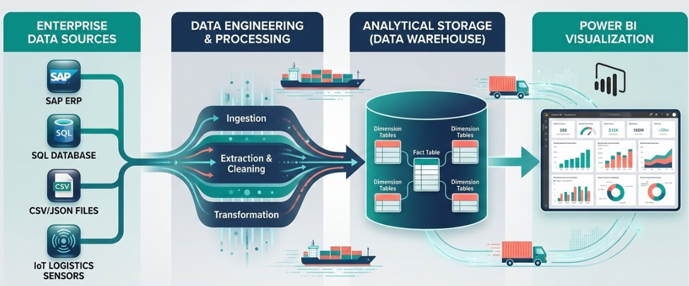
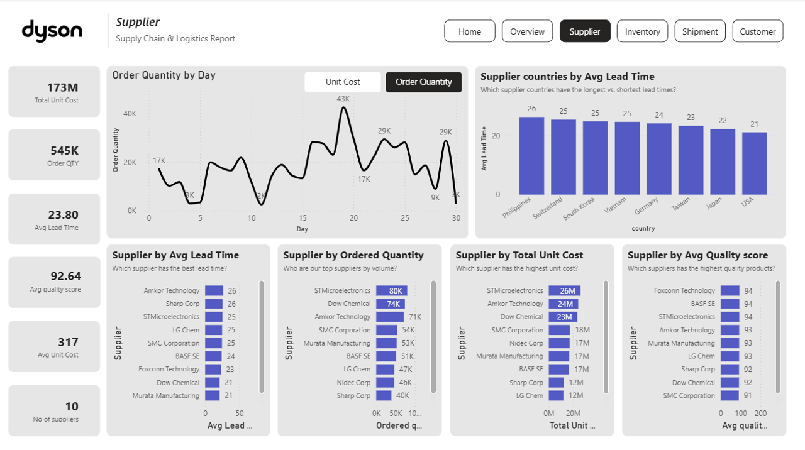
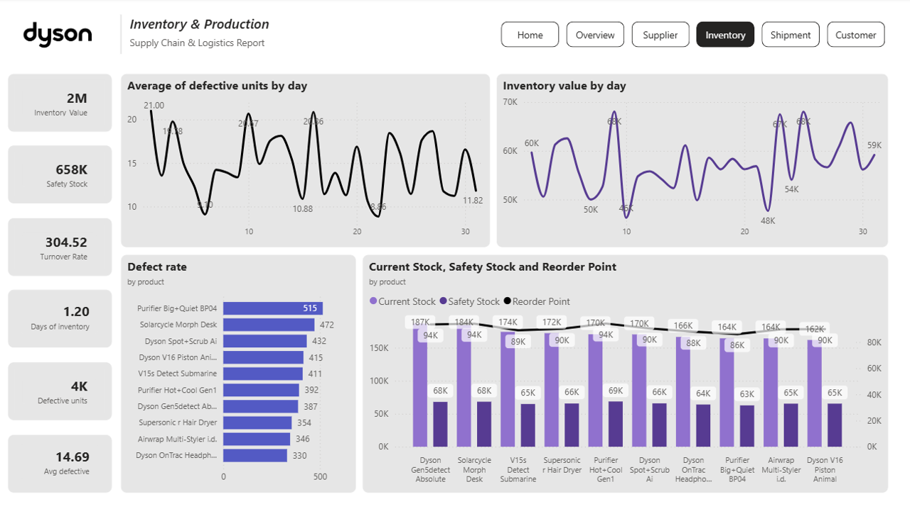
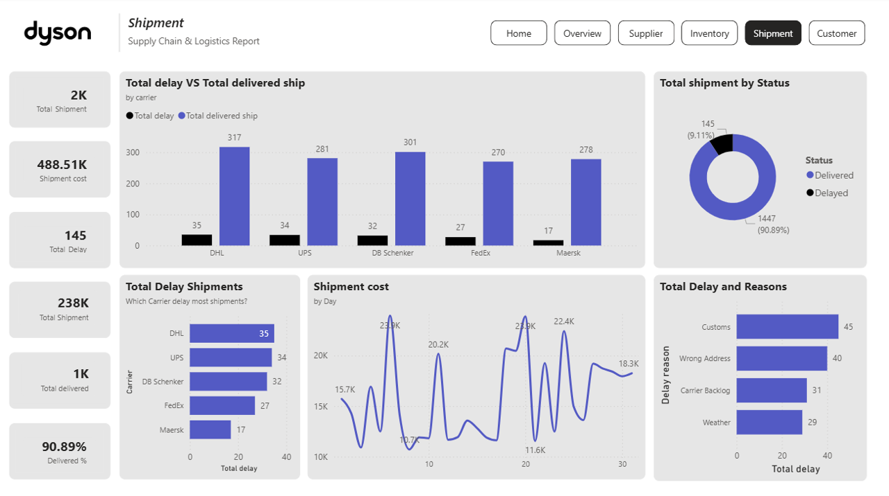
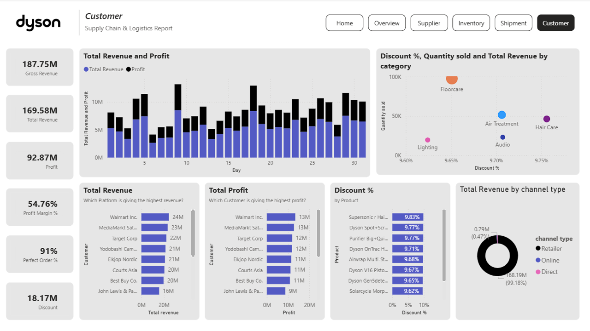

An Analytics Solution demonstrating how to turn raw logistics data into actionable business value and cost reductions.

This project showcases a comprehensive data solution for a global manufacturing and distribution leader. In a modern supply chain, raw data sits in silos across various departments.
By integrating data across Procurement, Production, Inventory, Sales, and Logistics, this dashboard acts as a "Single source of truth". The primary goal is to identify bottlenecks, target freight cost reductions, and ensure delivery reliability.

Moving beyond basic reporting, here is how the data was used to identify tangible business impact:
Insight: DHL maintains the highest On-Time Delivery (OTD) for high-value items, but Maersk offers a lower cost-per-unit for bulkier items despite a 12% higher delay rate due to customs holds.
Actionable Impact: Shifting 15% of non-urgent shipments to Sea Freight can reduce logistics spend by an estimated $200k/quarter without impacting safety stock.
Insight: The Singapore facility shows a stable defect rate (<1.2%), whereas the Johor Assembly Plant experienced localized spikes in defects for the V16 model.
Actionable Impact: Targeted maintenance in specific facilities prevents "Bad Batches" from reaching distribution, significantly reducing warranty claim costs.
Insight: The Rotterdam Euro Hub is overstocked (+30% above safety stock), while the Chicago facility is nearing a stockout for key vacuums.
Actionable Impact: A stock rebalancing strategy can free up $1.2M in tied-up capital and reduce warehouse holding costs.
Insight: Tier 1 suppliers in Japan provide the highest quality components but average a 5-day longer lead time compared to Tier 2 alternatives.
Actionable Impact: Procurement teams can dynamically adjust the Reorder Point to build a "Safety Buffer", preventing assembly line halts.




A comprehensive supply chain requires tracking metrics across all departments. Here is a breakdown of the core KPIs engineered in this project:
| Category | KPI Name | Calculation / Methodology | Business Value |
|---|---|---|---|
| Logistics | On-Time Delivery (OTD) % | Count(Delivered <= Promised Date) / Total |
Primary driver of customer retention. Delays cause brand damage and refund requests. |
| Logistics | Shipping Cost per Unit/Kg | Total Shipping Cost / Total Weight |
Identifies cost-saving opportunities by comparing carrier efficiencies. |
| Production | Defect Rate % | (Defective Units / Total Produced) * 100 |
Directly impacts Cost of Goods Sold (COGS). High rates mean wasted raw materials. |
| Procurement | Avg. Supplier Lead Time | Delivery Date - Order Date |
Determines supply chain agility. Long lead times require higher safety stock levels. |
| Procurement | Supplier Quality Score | Weighted average of QA scores |
Ensures raw materials meet standards before entering the assembly line. |
| Inventory | Stock-to-Safety-Stock Ratio | Current Stock / Safety Stock |
Prevents costly stockouts (lost sales) or severe overstocking (capital tied up). |
| Finance | Net Revenue | Gross Revenue - Discount Amounts |
Provides a realistic view of sales performance post-promotions. |
| Finance | Profit Margin % | (Net Revenue - Total Cost) / Net Revenue |
Identifies which product lines and regional markets are driving actual profit. |
I help businesses turn complex data into clear, actionable strategies.
Let's Connect View LinkedIn